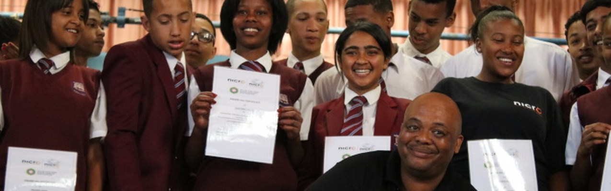

1. Youth crime Prevention Program

Nicro works with young people that are at risk to getting cosumed by the criminal system.Programs Include:
- Providing metorship by positive role models
- Going to schools and educating students about crime and the impact crime has to an individual and the consequences it has.
- Educating the youth on decision-making and orientating them about life and the responsibilities it has ad being respectful
2. Offer Rehabilitation and Reintegration

Assist covicts and ex-convicts to change their ways and behaviour so they return to society as law-abiding citizens.By providing:
- Counselling, anger management, and Therapy.
- Preparation for the life outside by developing the convicts life skills and job-readiness
- Supporting them to recconect with their families and earning the trust of their communitites
3. Employment and Skills Development

Nicro provides certain training to help people, espescially ex-convicts to find work so they are able to provide for their families and to stay away from crime.
- So Nicro will offer short-term courses in trades like plumbing,admin, or electrical work.
- Also educate convicts and ex-convicts job-seeking skills like writing CVs and how to hold themselevs in a interview.
- Nicro will consult with their investors that have businesses to employ some of the ex-convicts.
4. Community Safety Projects

Nicro work in hand with local residents to make their communities safe and protected
- Nicro organises clean-ups, Neighbourhood patrols.
- Provide Training to community leaders to spot and report issues.
- Nicro helps communities to build trusg in the law enforcement
5. Public Education and Awareness Campaigns

Nicro helps the community by educating them about crime prevention and community responsibility.
- By hosting events, marches and workshops
- Making use of radios, posters and social media to expand the messages
- Helps communities to find identity and value outside of gangs or crime